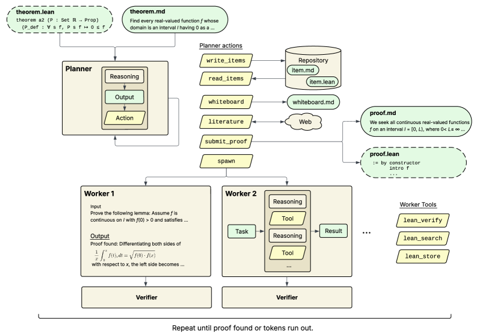

OpenProver is an agentic LLM theorem-proving system integrating Lean 4 formal verification, evaluated on ProofNet formal theorems.
Abstract
In this system paper, we present OpenProver, an open-source system for LLM-driven automated theorem proving (ATP) with integrated Lean 4 formal verification. OpenProver integrates a Planner-Worker-Verifier architecture inspired by recent ATP agentic systems such as Aletheia. A Planner agent maintains a compact Whiteboard scratchpad and an unbounded Repository of intermediate findings, and decomposes mathematical work into parallel Workers. OpenProver is fully open-source, offers reproducible evaluation through automatic formal verification of generated proofs, and provides an interactive terminal interface for human-guided proof search. In interactive mode, OpenProver allows the human operator to monitor and steer the proof search process, motivated by the established human-AI synergy in interactive code generation. To showcase the potential for quantitative ablation experiments enabled by automatic formal verification, we evaluate OpenProver on ProofNet and compare it with a simple baseline. OpenProver is publicly available at https://github.com/kripner/OpenProver.
Problem
Automated theorem proving systems are split between reproducible autonomous provers and interactive human-guided tools. There is a need for a system that bridges reproducible ATP research with interactive mathematical tooling and rigorous automatic evaluation.
Approach
OpenProver uses a Planner-Worker-Verifier agentic architecture with a reasoning LLM. The Planner maintains a Whiteboard scratchpad and a Repository of findings, decomposing work into parallel Workers whose outputs are checked by Verifiers. Lean 4 formal verification is integrated for both proof submission and automatic evaluation, and an interactive terminal interface lets users monitor and steer the search.

Figure 1: Overview of the OpenProver proof search loop. Planner iterates on the high-level plan, manages persistent state, and delegates mathematical work to Workers. A Verifier provides independent feedback to each Worker contribution.
Results
On 185 ProofNet formal theorems, OpenProver outperformed a linear chain-of-thought baseline, reaching 57.3% with Kimi-K2.5 (vs 36.8%) and 28.1% with Leanstral (vs 21.1%).
Model
Linear Rollout
OpenProver
Kimi-K2.5
36.8%
57.3%
Leanstral
21.1%
28.1%
Performance of OpenProver versus a baseline on ProofNet across models